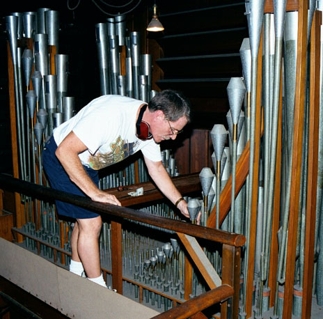
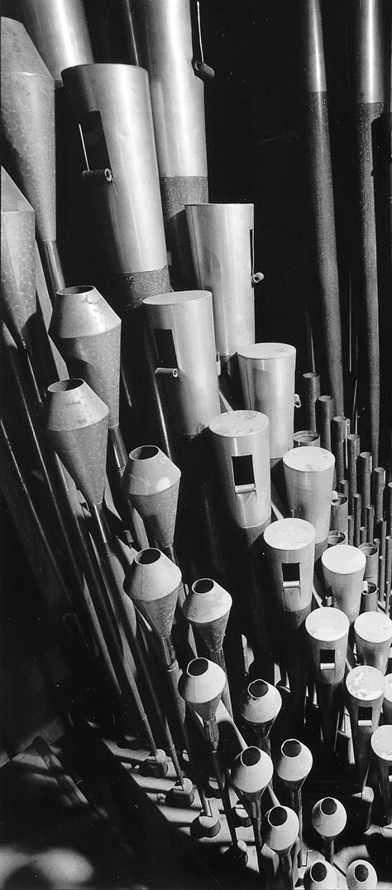

These are photographs of the 8' Heckelphone at Woolsey Hall, New Haven, Connecticut, USA by E. M. Skinner. They are reproduced here courtesy of Joe Vitacco. Compare the form of the resonators with those of the Heckelphone at Mt. Holyoke.
The color photo shows Joseph Dzeda, Associate Curator of Organs, Yale University. The Heckelphone is the frontmost rank.

photo by Joe Vitacco

photo by Harold Shaprio
|
Original website compiled by Edward L. Stauff. For educational use only. WH_Heckelphone.html - Last updated 16 March 2002. |
Home Full Index |